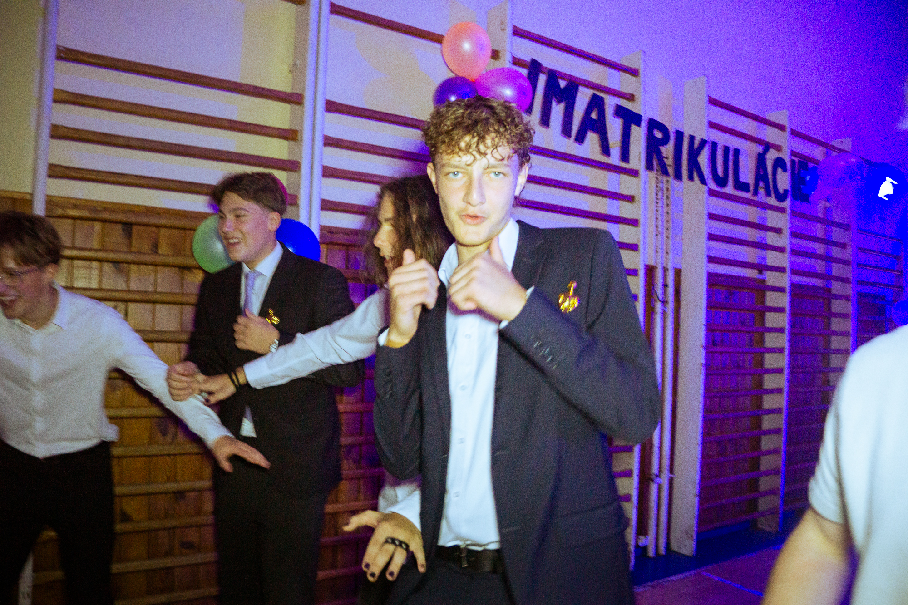
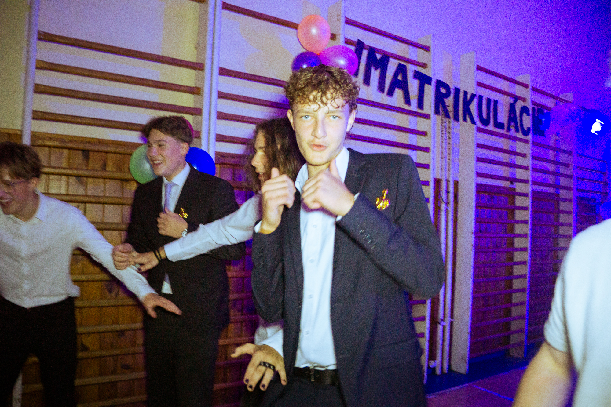
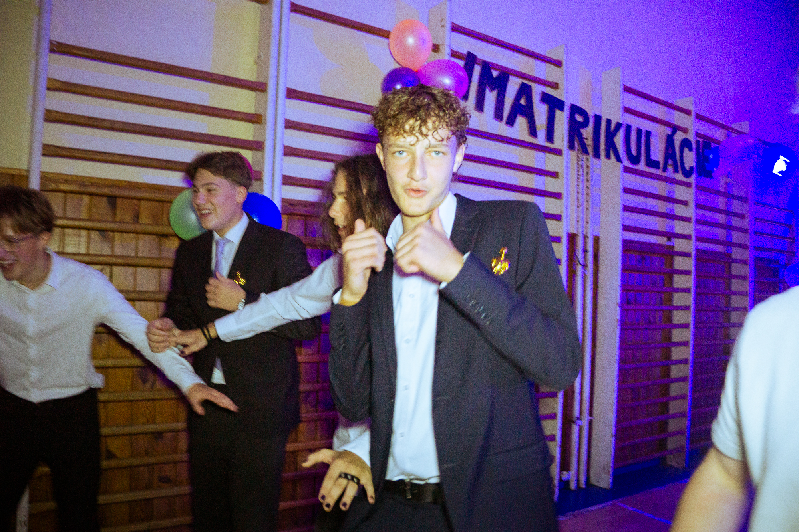

Som fotograf zameraný na koncerty, plesy a spoločenské udalosti. Zachytávam atmosféru, emócie a dôležité momenty tak, aby mali hodnotu aj po rokoch. Pracujem spoľahlivo, rýchlo a s citom pre detail.
